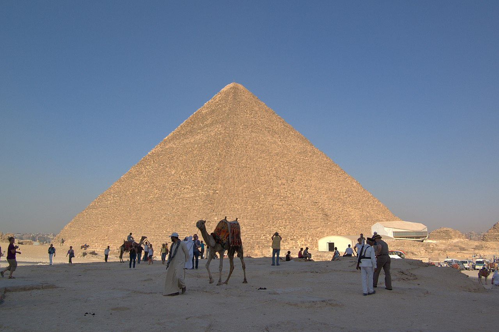

Cheopso piramidė, arba Didžioji Gizos piramidė – Egipto piramidė Gizoje, faraono Cheopso (Chufu) kapas. Tai didžiausia Senovės Egipto piramidė, pastatyta apie 2570 m. pr. m. e. Piramidė yra seniausias iš septynių pasaulio stebuklų ir vienintelis, išlikęs iki mūsų dienų. Senovės Egipto laikais jos vardas buvo „Chufu horizontas“.
